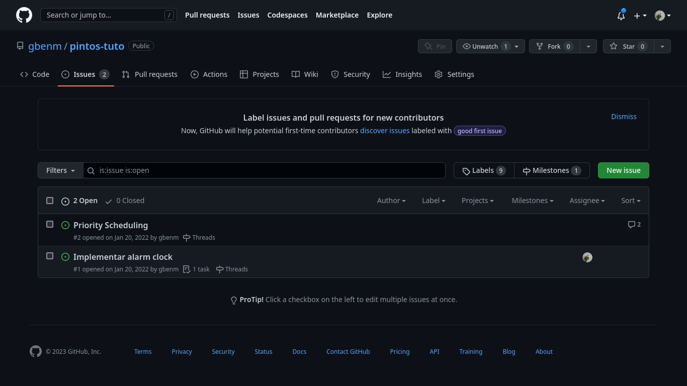
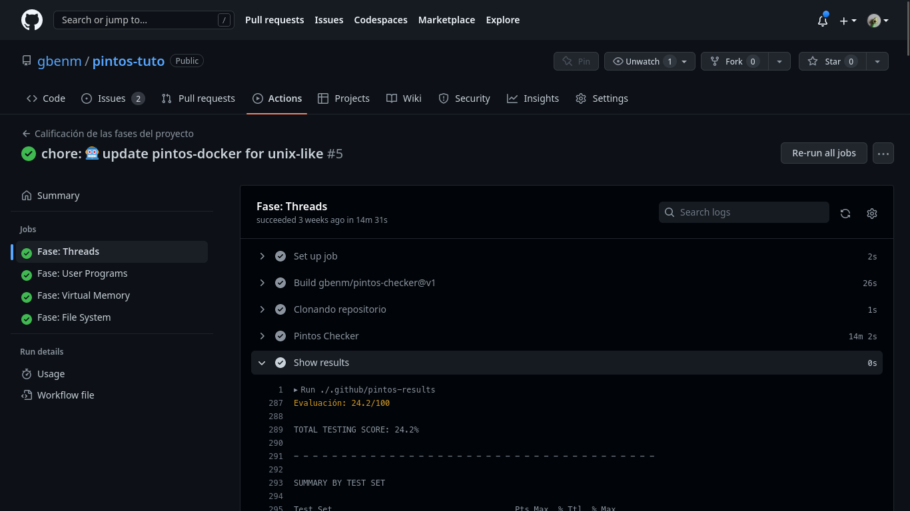

CC7 - Sistemas Operativos
PintOSContenido
Herramientas para colaborar en equipo
Notion
Notion
Github - Issues
Github - Milestones
Github - Milestone Issues

Herramientas para el flujo de trabajo
PintOS Github action
Github Action
Por fases del proyecto
Resultados
Configuración de Assertions
function threads(grade, total) {
return grade >= 100
}
function userprog(grade, total) {
return grade >= 50
}
Pintos VS Code
Pintos VS Code
- Crear un nuevo proyecto
- Usar un contenedor de docker para desarrollo
- Testing & Debugging
Pintos VS Code
Demo
Gracias :)
A dar lo mejor!! 💪